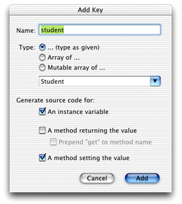
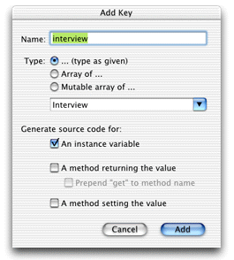
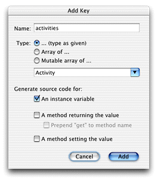
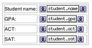
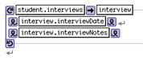
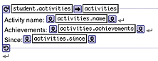

Before you take steps to customize the application to invoke
a new action, you need to write the code for the action. The action
you'll add here sends the contents of a Student record to a specified
email address. The code that constructs the email exists in your application's Session.java class.
Rather than send a plain text email, the email sent is a WebObjects
component email. This means that you can use a dynamic WOComponent object
to populate the contents of the email.
| Note: You'll better understand this part of the tutorial if you're familiar with the concepts involved in an HTML WebObjects application. The book Inside WebObjects: Discovering WebObjects for HTML is a great place to start learning. |
Follow these steps to make the new WOComponent:
Figure 5-19 New key of type Student in the Report component
Figure 5-20 New key of type Interview in the Report component
Figure 5-21 New key of type Activity in the Report component
gpa, act, sat, and name attributes
as shown in Figure 5-22. They are shown here in a table, but that
is optional.Figure 5-22 Dynamic elements for Student's attributes
interviews relationship.
Add a WORepetition with list = student.interviews and item
= interview. Add a WOString for interview.interviewDate and
a WOString for interview.interviewNotes within
the repetition as shown in Figure 5-23.Figure 5-23 WORepetition for Student's interviews
activities relationship.
Add a WORepetition with list=student.activities and item
= activities. Add WOStrings for activities.name, activities.achievements,
and activities.since as
shown in Figure 5-24.Figure 5-24 WORepetition for Student's activities
Session.java to
compose and send the message:
public void clientSideRequestSendRecordViaEmail(EOEnterpriseObject record) {
String messageSubject, messageBody, message;
NSMutableArray recipients = new NSMutableArray();
recipients.addObject("person@foo.com");
Report report = new Report(context());
report.setStudent(record);
messageSubject = "Student report for " + record.valueForKey("name");
message =
WOMailDelivery.sharedInstance().composeComponentEmail("sender@foo.com"
recipients, null, messageSubject, report, true);
}This
method uses the com.webobjects.appserver.WOMailDelivery class
to send an email message containing information from a student record.
You'll notice that the method is named clientSideRequestSendRecordViaEmail to
conform to the default rules for remote method invocation.
Session.java to
allow the invocation. In Session.java,
add an import statement for the com.webobjects.eodistribution package and
then add the distribution layer delegate method:
public boolean distributionContextShouldFollowKeyPath(EODistributionContext
distributionContext, String path) {
return (path.equals("session"));
}You can now add custom actions to invoke the email composition.
How the clientSideRequestSendRecordViaEmail method
in Session.java is invoked
depends on how you add the custom action. The following four sections
describe the possibilities, in order of recommendation.